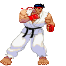
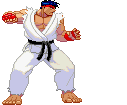

All-rounders are the most balanced fighters. They don't have any obvious strengths or weaknesses. That means they have a balanced defense to offense skill, high/low attacks, damage dealt/taken etc. One type of all-rounder fighter is called the Shoto. Named after Ryu and Ken from Street Fighter, this type of all-rounder usually has three significant moves. A fireball, an upwards kick, and a spinning kick that launches them forward. Although not every all-rounder is a Shoto, their attacks are still based on these same fundamentals.
Toolkit
 
- Mid range projectile
- Rising attack
- A move that sends then forwards
- Regular health pool
- Medium walk and moving speed
Strengths
- Versatility
Weaknesses
- Can be a jack of all trades, master of none
How should I play as this fighter?
Being a balanced fighter makes all-rounders extremely versatile. Their balanced move set allows them to control the game at any position on screen.How can I beat this fighter?
Although well rounded, this can come as a cost. Many players may describe an all-rounder as a jack of all trades, master of none. Being balanced means that they don’t particularly excel in one area. You should utilize the strengths of whoever you’re playing as, especially when an all-rounder can’t get to a certain level with one of their moves.Examples
- Ryu (Street Fighter, 1987)
- Ken Masters (Street Fighter, 1987)
- Jin Kazama (Tekken 3, 1997)